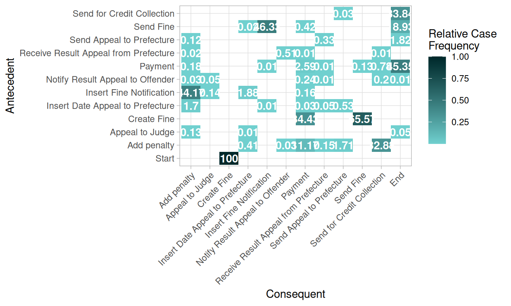
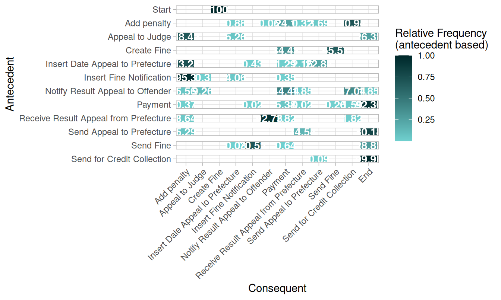
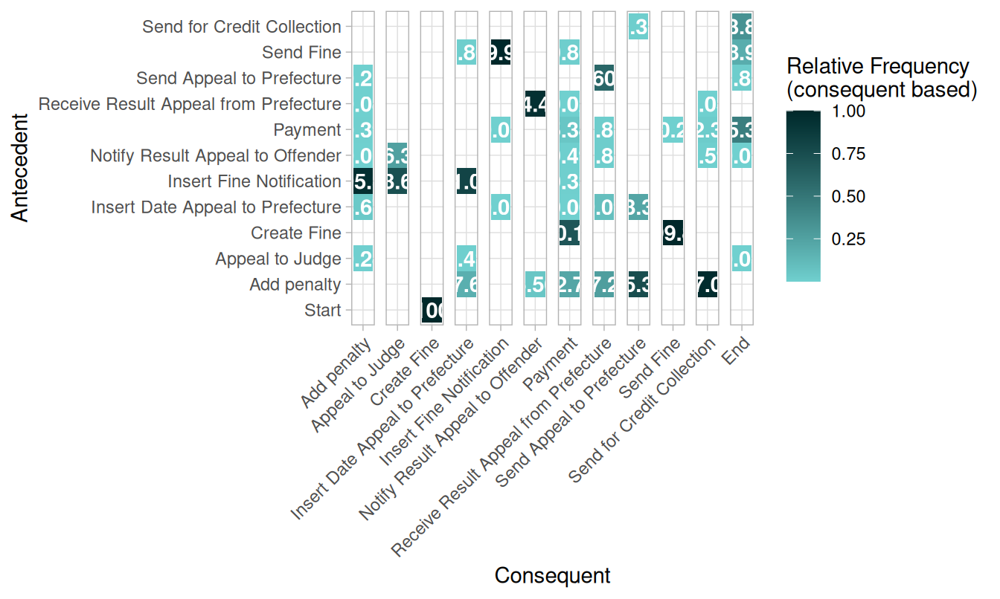

bupaR Docs | Process Matrix
Process Matrix
library(bupaverse)A process matrix is a two-dimensional matrix showing the flows
between activities. Its configuration is exactly the same as those used
by process_map, and can thus be the following.
frequency()- Absolute frequency of flows
- Relative case frequency of flows
- Relative frequency of flows, for each antecendent
- I.e. given antecendent A, it is followed x% of the time by Consequent B
- Relative frequency of flows, for each consequent
- I.e. given consequent B, it is preceded x% of the time by Antecedent A
performance()- aggregation function x time unite x flow time type
The result of process_matrix() is is a data.frame with
antecedent-consequent pairs, which can be visualized using
plot().
Frequency
Absolute
traffic_fines %>%
process_matrix(frequency("absolute")) ## # A tibble: 47 × 3
## antecedent consequent n
## <fct> <fct> <dbl>
## 1 Add penalty Insert Date Appeal to Prefecture 41
## 2 Add penalty Notify Result Appeal to Offender 3
## 3 Add penalty Payment 1117
## 4 Add penalty Receive Result Appeal from Prefecture 15
## 5 Add penalty Send Appeal to Prefecture 171
## 6 Add penalty Send for Credit Collection 3288
## 7 Appeal to Judge Add penalty 13
## 8 Appeal to Judge End 5
## 9 Appeal to Judge Insert Date Appeal to Prefecture 1
## 10 Create Fine Payment 3443
## # … with 37 more rowstraffic_fines %>%
process_matrix(frequency("absolute")) %>%
plot()Relative-case
traffic_fines %>%
process_matrix(frequency("relative-case")) ## # A tibble: 47 × 4
## antecedent consequent n_cases rel_n_cases
## <fct> <fct> <dbl> <dbl>
## 1 Add penalty Insert Date Appeal to Prefecture 41 0.0041
## 2 Add penalty Notify Result Appeal to Offender 3 0.0003
## 3 Add penalty Payment 1117 0.112
## 4 Add penalty Receive Result Appeal from Prefecture 15 0.0015
## 5 Add penalty Send Appeal to Prefecture 171 0.0171
## 6 Add penalty Send for Credit Collection 3288 0.329
## 7 Appeal to Judge Add penalty 13 0.0013
## 8 Appeal to Judge End 5 0.0005
## 9 Appeal to Judge Insert Date Appeal to Prefecture 1 0.0001
## 10 Create Fine Payment 3443 0.344
## # … with 37 more rowstraffic_fines %>%
process_matrix(frequency("relative-case")) %>%
plot()
Relative-antecedent
traffic_fines %>%
process_matrix(frequency("relative-antecedent")) ## # A tibble: 47 × 4
## antecedent consequent n rel_antecedent
## <fct> <fct> <dbl> <dbl>
## 1 Add penalty Insert Date Appeal to Prefecture 41 0.00885
## 2 Add penalty Notify Result Appeal to Offender 3 0.000647
## 3 Add penalty Payment 1117 0.241
## 4 Add penalty Receive Result Appeal from Prefecture 15 0.00324
## 5 Add penalty Send Appeal to Prefecture 171 0.0369
## 6 Add penalty Send for Credit Collection 3288 0.709
## 7 Appeal to Judge Add penalty 13 0.684
## 8 Appeal to Judge End 5 0.263
## 9 Appeal to Judge Insert Date Appeal to Prefecture 1 0.0526
## 10 Create Fine Payment 3443 0.344
## # … with 37 more rowstraffic_fines %>%
process_matrix(frequency("relative-antecedent")) %>%
plot()
Relative-consequent
traffic_fines %>%
process_matrix(frequency("relative-consequent")) ## # A tibble: 47 × 4
## antecedent consequent n rel_consequent
## <fct> <fct> <dbl> <dbl>
## 1 Add penalty Insert Date Appeal to Prefecture 41 0.177
## 2 Add penalty Notify Result Appeal to Offender 3 0.0556
## 3 Add penalty Payment 1117 0.227
## 4 Add penalty Receive Result Appeal from Prefecture 15 0.273
## 5 Add penalty Send Appeal to Prefecture 171 0.753
## 6 Add penalty Send for Credit Collection 3288 0.971
## 7 Appeal to Judge Add penalty 13 0.00280
## 8 Appeal to Judge End 5 0.0005
## 9 Appeal to Judge Insert Date Appeal to Prefecture 1 0.00431
## 10 Create Fine Payment 3443 0.701
## # … with 37 more rowstraffic_fines %>%
process_matrix(frequency("relative-consequent")) %>%
plot()
Performance
traffic_fines %>%
process_matrix(performance(FUN = mean, units = "weeks")) ## # A tibble: 47 × 4
## antecedent consequent n flow_time
## <fct> <fct> <dbl> <dbl>
## 1 Add penalty Insert Date Appeal to Prefecture 41 9.43
## 2 Add penalty Notify Result Appeal to Offender 3 11.1
## 3 Add penalty Payment 1117 25.1
## 4 Add penalty Receive Result Appeal from Prefecture 15 6.96
## 5 Add penalty Send Appeal to Prefecture 171 36.4
## 6 Add penalty Send for Credit Collection 3288 69.7
## 7 Appeal to Judge Add penalty 13 4.51
## 8 Appeal to Judge End 5 0
## 9 Appeal to Judge Insert Date Appeal to Prefecture 1 0.286
## 10 Create Fine Payment 3443 1.33
## # … with 37 more rowstraffic_fines %>%
process_matrix(performance(FUN = mean, units = "weeks")) %>%
plot()Read more:
Copyright © 2023 bupaR - Hasselt University